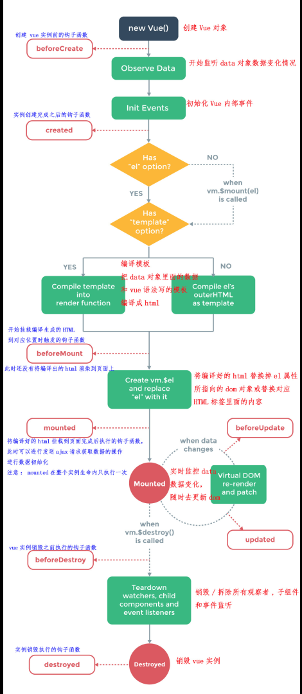

十一、vue生命周期诠释--带图原文出处:本文由博客园博主gunelark提供。
原文连接:https://www.cnblogs.com/gunelark/p/11138172.html

Vue 实例有一个完整的生命周期，也就是从开始创建、初始化数据、编译模板、挂载Dom→渲染、更新→渲染、卸载等一系列过程，我们称这是 Vue 的生命周期。通俗说就是 Vue 实例从创建到销毁的过程，就是生命周期。
- beforecreate :
完成实例初始化，初始化非响应式变量
this指向创建的实例；
可以在这加个loading事件；
data computed watch methods上的方法和数据均不能访问
- created
实例创建完成
完成数据(data props computed)的初始化 导入依赖项。
可访问data computed watch methods上的方法和数据
未挂载DOM,不能访问$el,$ref为空数组
可在这结束loading，还做一些初始化，实现函数自执行,
可以对data数据进行操作，可进行一些请求，请求不易过多，避免白屏时间太长。
若在此阶段进行的 DOM 操作一定要放在 Vue.nextTick() 的回调函数中
- berofeMount
有了el,编译了template|/outerHTML
能找到对应的template,并编译成render函数
- mounted
完成创建vm.$el，和双向绑定，
完成挂载DOM 和渲染;可在mounted钩子对挂载的dom进行操作
即有了DOM 且完成了双向绑定 可访问DOM节点,$ref
可在这发起后端请求，拿回数据，配合路由钩子做一些事情；
可对DOM 进行操作
- beforeUpdate
数据更新之前
可在更新前访问现有的DOM,如手动移除添加的事件监听器；
- updated :
完成虚拟DOM的重新渲染和打补丁；
组件DOM 已完成更新；
可执行依赖的dom 操作
注意：不要在此函数中操作数据，会陷入死循环的。
- activated:
在使用vue-router时有时需要使用<keep-alive></keep-alive>来缓存组件状态，这个时候created钩子就不会被重复调用了，
如果我们的子组件需要在每次加载的时候进行某些操作，可以使用activated钩子触发
- deactivated
for keep-alive 组件被移除时使用
- beforeDestroy：
在执行app.$destroy()之前
可做一些删除提示，如：你确认删除XX吗？
可用于销毁定时器，解绑全局时间 销毁插件对象
-
destroyed ：
当前组件已被删除，销毁监听事件 组件 事件 子实例也被销毁
这时组件已经没有了，你无法操作里面的任何东西了。
子父组件的生命周期
- 仅当子组件完成挂载后，父组件才会挂载
- 当子组件完成挂载后，父组件会主动执行一次beforeUpdate/updated钩子函数（仅首次）
- 父子组件在data变化中是分别监控的，但是在更新props中的数据是关联的（可实践）
- 销毁父组件时，先将子组件销毁后才会销毁父组件
- 兄弟组件的初始化（mounted之前）分开进行，挂载是从上到下依次进行
- 当没有数据关联时，兄弟组件之间的更新和销毁是互不关联的
- mixin中的生命周期与引入该组件的生命周期是仅仅关联的，且mixin的生命周期优先执行